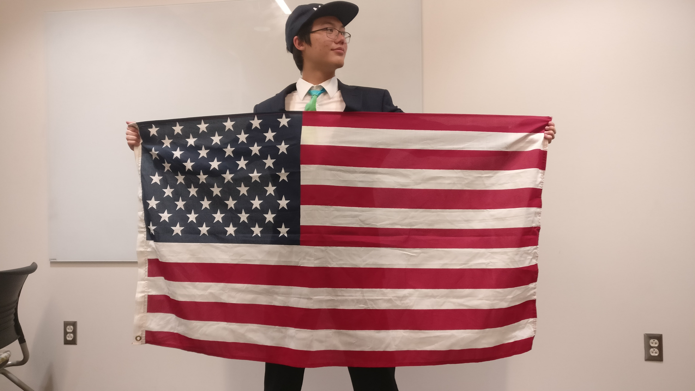

Make
Who We Are
My name is Gavin Tang and I am running for the office of President of the United States. I, like many of my fellow Americans have been robbed. Our childhood curiosity was stolen from us through years of conditioning in public education. My campaign is on a mission to take our curiosity back, and stop the thieves from harming the next generation.
Why Curiosity
Our economy is undergoing its largest shift since the industrial revolution. Human labor is increasingly being replaced with automation. Not just physical labor – as computer scientists continue to develop improvements to artificial intelligence, it’s becoming more and more common for middle class jobs to go to robots instead of us. No amount of regulation is going to stop corporations from using the cheapest option, and in the long run, automation makes us all more prosperous. However, in the short run, we need to give Americans the tools they need to stay relevant in the futuristic workforce.
There are some human traits that aren’t going to be automated away any time soon. Curiosity is our greatest strength moving forward. In the coming years, machines will be able to solve most problems better than we can, but we, as curious beings, will be needed to ask what problems need to be solved. Our campaign is dedicated to building an America where people are comfortable asking questions and coming up with new ideas.
Policy
The main focus of the Curiosity campaign is to prepare citizens with the tools they need to be happy and successful in the future. Here are some of the policies we will implement to make sure that happens.
Redefine Success for Public Education
Let’s not sugar coat things. Our current system of public education is outright dystopian. Children as young as 8 are forced to take standardized tests that define which educational track they will be placed on. More than that, the average scores of the children are used to define the success of the school. Many schools receive funding based on the success of their students in these standardized tests. As a result, schools are incentivized to teach our kids how to take the test, and nothing else. Why should a school teach a child to be curious? Any question they ask is a minute wasted that could be spent preparing them for the test, and a slightly higher score, and a little bit more funding.
We need to redefine our metrics for academic success to include the skills of the future. Education should be about the children, not the schools themselves. Under my presidency, we will create programs to check in with students throughout their academic and professional career. Schools will be assessed based on the diversity of fields their students move in to, in addition to the self-reported happiness and sense of fulfilment of the students. We need to make it clear that our goals are to prepare students to have a good life, not to prepare students to have a good test, and our methods of measuring the public education system need to reflect that.
Regulate Educational Monopolies
Pull aside any high schooler and ask them for their thoughts on Pearson or College Board. You will most likely get a look of disgust in response. Giant education corporations have a chokehold on our system that hurts everybody. These companies charge students to take tests that define their success. Then they charge schools for packets of content to teach students how to take the test. Then they charge teachers for content on how to teach students how to take the test. At no point in the model are these corporations incentivized by educating children, it is always a question of how much money they can get out of them. Because these companies control both the tests and the educational content, they hold too much power within the market, and can avoid fair competition.
As president, I will push for legislation that classifies companies like Pearson and College Board as “Educational Monopolies” and force them to break apart their testing and educational content into separate entities. This will ensure that the best interests of educational companies are in line with the personal best interests of students.
Government Grants for Creative Ideas
One of the greatest pressures preventing creative thinking is economic hardship. How can a person be curious and excited about new ideas if they are too busy thinking about how they are going to pay rent? These ideas that Americans aren’t having could provide enormous value to our culture, our economy, and our society. It has been said that the cure for cancer could be trapped within the brain of an impoverished child, and the next great innovation could be trapped within the mind of an American who is trapped in a cubicle.
As president, I will create the Department of Creativity, which would seek out and fund Americans who have ideas that they can’t risk trying to implement due to their economic situation. America is an entrepreneurial country, and everyone should have the freedom to create, regardless of their economic status. By investing in ideas that haven’t even been thought of yet, we can push America into a prosperous and innovative future.
Shave JL's Beard
We value questions and the unknown, but there are some things that are too important to not understand. What does JL look like without a beard? Nobody knows, and we need to find out.
The Value of Humanity
We need to become more creative by rethinking the way we view entrepreneurship. Creativity isn’t just about coming up with something new or unique, it is also about recognizing the value in human beings. Our campaign talked to Michael Newell, founder of two businesses in two very different fields. Mr. Newell assisted in the creation of Epsilon Economics, a financial consulting agency, and Evolution Soccer Club. When founding Epsilon Economics, Mr. Newell noticed that in this industry, there was no marketing, or branding. All value was held in the relationships the individual consultants held with clients.
Later, Mr. Newell noticed that a coach from his daughter’s soccer club was being taken advantage of financially by the owners of the club. Mr. Newell recognized that this coach was the reason most clients were interested in the club. Most people didn’t care about the club itself, so Mr. Newell started his own club, and invited the coach, and paid him correctly. Almost all of the participants in the old club transferred.
We need this kind of human centered entrepreneurship to be more in the spotlight. Children should aspire to create something new, not just to make millions, but to help millions.